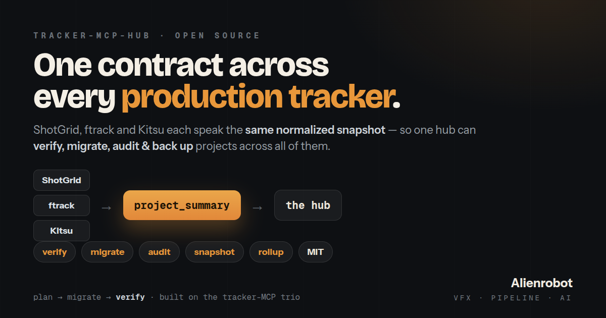

tracker-mcp-hub is a tracker-agnostic production-data layer. Each tracker MCP emits the same normalized snapshot, and the hub turns that one contract into things no single tracker can do — verify, migrate, audit, snapshot and roll up across ShotGrid, ftrack and Kitsu interchangeably.
# audit: ShotGrid (source of truth) vs its mirror copies kitsu copy tasks −53 ftrack copy tasks −8 · status mismatches 615 · casting mismatches 357 assets missing 1 (Farmhouse) / extra 2 (Farmhouse (2), Branch (2)) ← ftrack name-collisions # every finding is a documented cross-tracker incompatibility — surfaced automatically. # and an orchestrated migrate of a slice ended with: VERIFY PASS (all counts matched)
Adding a tracker = a new MCP that emits project_summary; every hub tool works on it for free. The hub is mostly pure — verify / audit / rollup / snapshot need no tracker SDK.